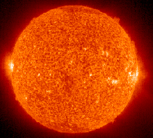

What conditions were necessary to form our Sun?

|
 |
The Sun is a typical medium-sized star, positioned about midway on the main sequence of the Hertzsprung-Russell diagram. But as the source of energy for life on Earth, there is a rather narrow window of characteristics it had to have. The solar spectrum peaks at photon energies which facilitate the electron transfers essential to life chemistry. And those energies are appropriate for transmission through Earth's atmosphere. |
In order to form rocky planets like the Earth, the Sun had to have a relatively high content of heavy elements. To astronomers, heavy elements are anything heavier than helium and are commonly lumped under the term "metals". The "metallicity" of the Sun is relatively high, making possible the formation of the four inner planets. This places constraints upon the time of formation of the Sun since the heavy element formation takes place in other stars. These heavy elements, left behind by several generations of earlier stars, must have been a part of the hydrogen cloud from which the Sun and solar system formed.
|
Index
|